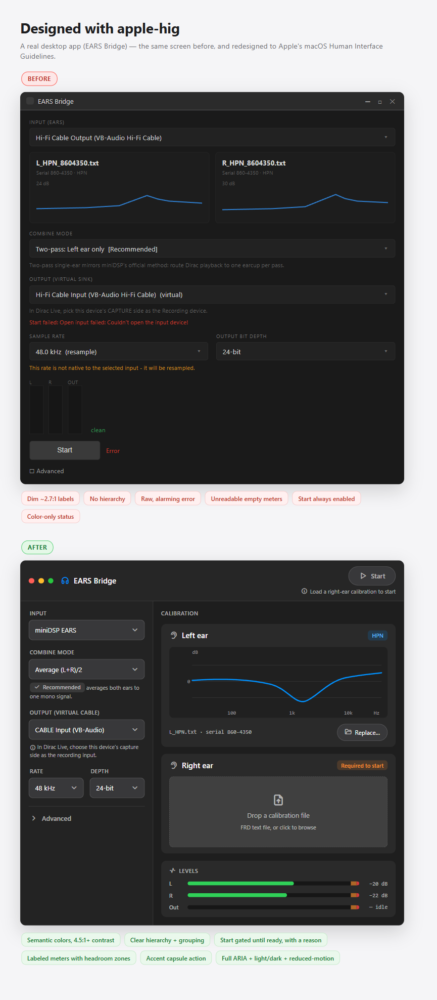

A complete, on-disk copy of Apple's Human Interface Guidelines — so your assistant builds and audits interfaces to spec across iOS, iPadOS, macOS, watchOS, tvOS, and visionOS. No runtime fetching; it loads only what each task needs.
# in a Claude Code session
/plugin marketplace add elevatormusic/apple-hig
/plugin install apple-hig@apple-hig

A router skill, an auditing subagent, and design-token output — over 161 sourced reference files.
Triggers on any UI/design/review task, detects the platform, and loads just the few relevant guideline files — never the whole folder.
Audits SwiftUI, UIKit, AppKit, React, Flutter, or CSS and reports each violation with the rule, the Apple source, and a concrete fix.
/hig-review audits code, /hig-scaffold generates a compliant screen, /hig-tokens emits tokens as CSS, Tailwind, JSON, SwiftUI, or React Native.
The type ramp, system colors and their dark variants, device sizes, 44/60 pt targets, and contrast minimums — checked against Apple's live HIG.
Reflects the “26” generation and the WWDC 2026 “Golden Gate” (27) refinement, with a source URL on every file for re-verification.
The whole reference ships in the plugin and loads on demand — fast, offline, and stable. About 434 always-on tokens per session.
Native plugin for Claude Code. One command writes the right rules file for everything else.
# in your project — pick your tool (or --tool all)
npx github:elevatormusic/apple-hig --tool cursor
In Claude Code, install the native plugin. Elsewhere, run the one-liner above.
/plugin marketplace add elevatormusic/apple-hig (or claude plugin marketplace add elevatormusic/apple-hig from a terminal)./plugin install apple-hig@apple-hig./hig-review on a file./plugin install playwright@claude-plugins-official) so the reviewer can render and visually verify your UI — real contrast, spacing, and dark mode.